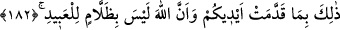

öldürmelerinden maksat, seleflerinin peygamber öldürme fiillerine rızâ göstermiş
olmalarıdır.
“Haksız yere” ifadesi, öldürülmelerinin hâlini beyân eden mahzûf bir kelimeye
müteallıktır: “Gerçekte öyle olduğu gibi, kendi itikadlarına göre de haksız ve suçsuz
yere öldürmeleri” demektir.
Ve ölürlerken yahut haşredilirlerken yahut da kitapları okunurken “yakıcı azabı
tadın” diyeceğiz. Yani günahlarını yazdıktan sonra, “siz peygamberlere nasıl o
sıkıntıları tattırdı iseniz, siz de bu yakıcı azabı tadın” diyerek onlardan intikam alacağız.
182. Bu, dünyada iken kendi ellerinizle yapmış olduğunuzun karşılığıdır. Yoksa
Allah kullarına zulmetmez.
Bu anlatılan azap, “ellerinizin yaptığının karşılığıdır.” Yani irtikâb ettiğiniz;
peygamberleri öldürmek ve ağzınıza aldığınız bu laflar ve daha bunlara benzer
mâsiyetler sebebiyledir. Bizzat kendilerinden “eller” diye bahsedilmesi, yani
“yaptığınız” denilmeyip de, “ellerinizin yaptığı” denilmesi çoğu amelin ellerle
yapılmasından dolayıdır. Böylece, elle yapılan ameller yapılmayanlara üstün kılınarak
bütün amellerin ellerle yapıldığı söylenmiştir.
“Ve Allah kullarına aslâ zulmedici değildir.” Bu cümle, öncesindeki cümlenin
zımnen ifade ettiği mânayı kuvvetlendirmektedir: “Durum şudur: Allah Teâlâ, kendi
taraflarından bir günah olmaksızın kullarına azap etmez.” Her ne kadar ehl-i sünnet
akîdesine göre, bırakın O’nun bu haklı azabını, günahsız yere azap etmesi bile zulüm
olmadığı halde böyle denmesinin sebebi şudur: Allah (c.c.) bu ifade tarzıyla,
kendisinden bir zulmün meydana gelmesinin imkânsız olduğunu beyân ediyor. Nitekim
ameller, mutlaka karşılık vermeyi gerektirmediği halde, amele karşılık sevap
vermemeyi de amelleri zâyî etmek şeklinde ifade etmektedir. Tâ ki, o amellere ilgisiz
kalmak, sevabın zâyî olmasını gerektirsin. “Allah, kullarına asla zulmedici değildir.”
buyurulurken; mübâlağa ifade eden bir kalıbın seçilişi, suçsuz yere azap etmesinin
imkânsızlığını kesin bir şekilde ifade içindir.
Kula kötü sıfatlar galip gelip hevâ ve şeytan hâkim olup kişinin kalbi ölünce, nefsinin
emmâreliği artar. Kul, artık sadece hevâsından konuşur. Konuştuğu şeyler; “Şeytanlar
elbette dostlarına vahyederler” (el-En’âm, 6/121) âyet-i kerîmesinde belirtildiği gibi,
kendisine şeytanın ilka ettiği vahiylerdir. Nefis, kişinin hevâsı sâyesinde palazlanır
palazlanmaz, Firavun’un, “sizin en yüce rabbiniz benim” (en-Nâziât, 79/24) diyerek
rablık iddiâ etmesi gibi rablık iddiâ eder. Sözleri rablık sıfatı taşımaya başlar. “Zengin
olan Allah’tır, siz ise muhtaçsınız.” (Muhammed, 47/38) sözü rablık sıfatlarındandır.
Ancak, daima kötülüğü emreden nefsin bu fâsid durumu tam hâle gelince, bu sefer rablık